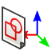

|
 |
| Descrizione |
|---|
| Questa macro ripristina la posizione di uno schizzo a una posizione assoluta, creando infine un piano di riferimento. Questa macro è stata scritta principalmente per aggirare il problema di denominazione topologica che può danneggiare un modello quando uno schizzo è stato collegato direttamente o indirettamente a una faccia o a qualsiasi altro elemento topologico. Per evitare danni, la macro deve essere applicata quando il modello è ancora corretto. Non può "riparare" un modello danneggiato. Se il modello si danneggia, annullare le ultime modifiche per ripristinare la situazione corretta, applicare la macro allo schizzo instabile e quindi ripetere l'operazione precedente. |
| Autore |
| OpenBrain |
| Download |
| ToolBar Icon |
| Link |
| Raccolta di macro Come installare le macro Personalizzare la toolbar |
| Versione macro |
| 0.6.2 |
| Data ultima modifica |
| 14/06/20192 |
| Versioni di FreeCAD |
| 0.17 and above |
| Scorciatoia |
| Nessuna |
| Vedere anche |
| Nessuno |
Questa macro è stata scritta principalmente per aggirare il problema della denominazione topologica che può danneggiare un modello quando uno schizzo viene collegato direttamente o indirettamente a una faccia o a qualsiasi altro elemento topologico.
Per evitare danni, la macro deve essere applicata quando il modello è ancora corretto. Non può "riparare" un modello danneggiato. Se il modello si danneggia, annullare le ultime modifiche per ripristinare la situazione corretta, applicare la macro allo schizzo instabile e quindi ripetere l'operazione precedente.
Dal punto di vista funzionale, la macro rimuoverà la mappatura corrente dello schizzo su cui viene applicata, quindi applicherà ad esso un posizionamento assoluto in modo che sia immune alle modifiche del supporto di mappatura.
Per fare ciò, la macro proporrà fondamentalmente 3 opzioni (se lo schizzo non si trova in un corpo PartDesign, è disponibile solo la prima opzione e verrà applicata automaticamente):
Per utilizzare la macro, è sufficiente selezionare lo schizzo di destinazione (ad esempio, nella vista ad albero) e quindi eseguire la macro. Tutto qui!
The macro is available through Addon Manager. Code is provided on this page for convenience in case user system doesn't have git-python. Though it should be up-to-date, latest release is always available at FreeCAD-macro repository
For more detailed explanations, see the How to install macros page.
For better understanding, below is an example : Let's suppose a simple cube whose top (yellow) face has been drafted. A cylinder is created with a padded circle whose sketch has been mapped (Flat face) to the drafted face and offset to match needs (Attachment offset) :
Now for some reason, you need to revert the pull direction of the draft (of course without the cylinder to move). Here is what basically happen :
The treeview shows an error, the 3D view isn't updated, and the circle sketch is floating in the middle of nowhere...
Now comes the job of the macro (that you need to run before changing the reference face, when the sketch is still at its right place). Select the sketch and run it. If your sketch is in a body, a message box will ask to choose among the 3 different options (if your sketch is out of a body, it will automatically apply the 1st one) :
Which in term of picture gives the following :
Macro_SketchUnmap.FCMacro
#!/usr/bin/python
#####################################
# Copyright (c) openBrain 2019
# Licensed under LGPL v2
#
# This FreeCAD macro will unmap a sketch from eg. a face and make its placement absolute in the body. It proposes 3 options (forcely the first if sketch not in a body) :
# * "Raw" mode => the sketch placement is made absolute in the body referential, nothing more
# * "DP@Face mode" => a datum plane is created where the mapping face is, then the sketch is attached to it respecting its attachment offset
# * "DP@Sketch" mode => a datum place is created where the sketch is (including attachment offset), then the sketch is attached to its origin
#
# Main use of the macro is to make design more robust to topological naming issue
#
# Version history :
# *0.6.2 : add icon (metadata)
# *0.6.1 : minor changes after PR review
# *0.6 : some typo improvement + commenting for official PR
# *0.5 : beta release
#
#####################################
__Name__ = 'SketchUnmap'
__Comment__ = 'Unmap a sketch & makes its placement absolute"'
__Author__ = 'openBrain'
__Version__ = '0.6.2'
__Date__ = '2019-06-14'
__License__ = 'LGPL v2'
__Web__ = 'https://wiki.freecad.org/Macro_SketchUnmap'
__Wiki__ = 'https://wiki.freecad.org/Macro_SketchUnmap'
__Icon__ = 'https://wiki.freecad.org/images/3/34/SketchUnmap.svg'
__Help__ = 'Select the sketch to unmap (eg. in the tree view) then run the macro'
__Status__ = 'Beta'
__Requires__ = 'FreeCAD >= 0.17'
__Communication__ = 'https://forum.freecad.org/viewtopic.php?f=22&t=36078'
# __Files__ = ''
__dbg__ = False #True for debugging
from PySide import QtGui
def cslM(msg): #Print message in console
FreeCAD.Console.PrintMessage('\n')
FreeCAD.Console.PrintMessage(msg)
def cslW(msg): #Print warning in console
FreeCAD.Console.PrintMessage('\n')
FreeCAD.Console.PrintWarning(msg)
def cslE(msg): #Print error in console
FreeCAD.Console.PrintMessage('\n')
FreeCAD.Console.PrintError(msg)
def cslD(msg): #Print debug message in console
if __dbg__:
FreeCAD.Console.PrintMessage('\n')
FreeCAD.Console.PrintMessage("Debug : " + str(msg))
_0Vec_ = FreeCAD.Vector(0, 0, 0) #Shortener for null vector
_ZVec_ = FreeCAD.Vector(0, 0, 1) #Shortener for Z axis
if __dbg__: ##Clear report view in debug mode
FreeCADGui.getMainWindow().findChild(QtGui.QTextEdit, "Report view").clear()
cslM("Starting SketchUnmap macro")
cslD("Checking selection")
##If selection is wrong, print error message and exit
if (len(Gui.Selection.getSelection()) != 1 or str(Gui.Selection.getSelection()[0]) != '<Sketcher::SketchObject>'):
cslE("You must select a sketch that you want to unmap (and only one) ... Exiting")
else:
cslD("Selection OK")
App.ActiveDocument.openTransaction("SketchUnmap") #Open transaction for undo management
sk = Gui.Selection.getSelection()[0] #Get target sketch
skNatPl = sk.Placement #Store placement
skNatAO = sk.AttachmentOffset #Store attachment offset
skInBody = False
for obj in sk.InList: ##Check if sketch is inside a Body
if obj.TypeId == 'PartDesign::Body':
skInBody = True
skBody = obj
cslD("Sketch in a body : " + str(skInBody))
msgb = QtGui.QMessageBox() ##Prepare the message box to choose option
msgb.setWindowTitle("Unmap Sketch : Mode selection")
msgb.setText("""Choose which unmapping mode you want to apply :
Raw => the sketch placement is made absolute in the body referential, nothing more
DP@Face => a datum plane is created where the mapping face is, then the sketch is attached to it respecting its attachment offset
DP@Sketch => a datum place is created where the sketch is (including attachment offset), then the sketch is attached to its origin
Click 'Cancel' to cancel operation""")
msgb.setIcon(QtGui.QMessageBox.Question)
rbut = msgb.addButton("Raw", QtGui.QMessageBox.AcceptRole)
fbut = msgb.addButton("DP@Face", QtGui.QMessageBox.AcceptRole)
sbut = msgb.addButton("DP@Sketch", QtGui.QMessageBox.AcceptRole)
cbut = msgb.addButton("Cancel", QtGui.QMessageBox.RejectRole)
if skInBody: #If sketch in a Body
msgb.exec_() ##Show message box and get user choice
msgbRep = msgb.clickedButton()
else:
msgbRep = rbut #Else apply raw mode automatically
if msgbRep == rbut: #If raw mode
sk.Support = None ##Just unmap the sketch so its placement is absolute
sk.MapMode = 'Deactivated'
elif msgbRep == fbut: #If DP@Face mode
newDP = skBody.newObject('PartDesign::Plane','DP' + sk.Name) #Create a datum plane
if sk.Label != sk.Name: ##Eventually clarify its label
newDP.Label = 'DP' + sk.Label
newDP.Support = None ##Plane is placed absolute
newDP.MapMode = 'Deactivated'
newDP.Placement = skNatPl.multiply(skNatAO.inverse()) #Plane placement is set to former face one
sk.Support = [(newDP,'')] #Sketch is mapped to plane keeping its attachment offset
elif msgbRep == sbut: #If DP@Sketch mode
newDP = skBody.newObject('PartDesign::Plane','DP' + sk.Name) #Create a datum plane
if sk.Label != sk.Name: ##Eventually clarify its label
newDP.Label = 'DP' + sk.Label
newDP.Support = None ##Plane is placed absolute
newDP.MapMode = 'Deactivated'
newDP.Placement = skNatPl #Plane placement is set to former sketch one
sk.Support = [(newDP,'')] ##Sketch is mapped to plane resetting its attachment offset
sk.AttachmentOffset = App.Placement(_0Vec_, App.Rotation(_ZVec_, 0))
App.ActiveDocument.commitTransaction() #Commit transaction for undo management
cslM("SketchUnmap Macro ended correctly")
For any feedback (bug, feature request, comments, ...), please use this forum thread : (FR) macro to remap sketch to different reference
{kind=link}
{kind=link}
{kind=link}
{kind=link}
{kind=link}